FOX NUT & SNACK - BAR ITALIA
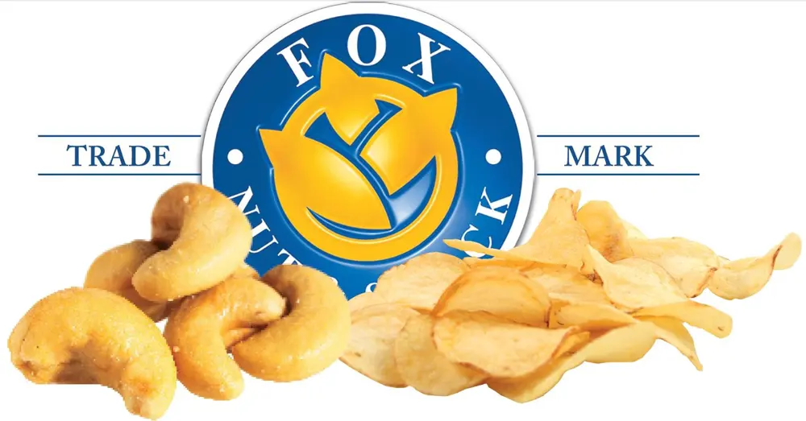
Ed è con piacere che, dopo tante recensioni di prodotti non commestibili, oggi vi parlo di un'azienda che a me è piaciuto TROPPO testare. Vi parlo di Fox Nut & Snack - Bar Italia Di cosa si tratta?Beh, a chi non piacciono le patatine? A chi non piace fare l'aperitivo prima di cena?A chi non piace sgranocchiare qualche cosa di salato anche durante il pomeriggio?A me piace fare tutte queste cose che ho elencato ahahah
 Ci ho messo un pò per assaggiarle tutte lo so, ma oggi sono pronta a parlarvene. Partiamo col dire che la Fox Nut & Snack - Bar Italia è un'azienda italiana che si occupa appunto dell'aperitivo italiano, ispirati dai più celebri film italiani che hanno dato vita alla pellicola italiana nel mondo come "LA DOLCE VITA" o "I VITELLONI" Ennio Flaviano e dalla follia di Antonio Pavone, vollero scommettere nei prodotti snack da aperitivo, e da qui nasce la FOX NUT & SNACK.Partendo dagli arachidi e via via arrivando alle torillia chips, come anche le patate artigianali col rosmarino, tutte queste novità nel 1948 in Italia erano davvero cose anormali da proporre in tavola, eppure oggi l'azienda Fox Nut & Snack è divenuta un'importante realtà industriale. Vi mostro le tante varietà, ma non tutte, che potete gustare acquistando da questa fantastica azienda.
Ci ho messo un pò per assaggiarle tutte lo so, ma oggi sono pronta a parlarvene. Partiamo col dire che la Fox Nut & Snack - Bar Italia è un'azienda italiana che si occupa appunto dell'aperitivo italiano, ispirati dai più celebri film italiani che hanno dato vita alla pellicola italiana nel mondo come "LA DOLCE VITA" o "I VITELLONI" Ennio Flaviano e dalla follia di Antonio Pavone, vollero scommettere nei prodotti snack da aperitivo, e da qui nasce la FOX NUT & SNACK.Partendo dagli arachidi e via via arrivando alle torillia chips, come anche le patate artigianali col rosmarino, tutte queste novità nel 1948 in Italia erano davvero cose anormali da proporre in tavola, eppure oggi l'azienda Fox Nut & Snack è divenuta un'importante realtà industriale. Vi mostro le tante varietà, ma non tutte, che potete gustare acquistando da questa fantastica azienda.VINTAGE CORN TORTILLA CHIPS - LIGHTLY SALTED
Patatine al gusto di rosmarino.
PARERE:ottime!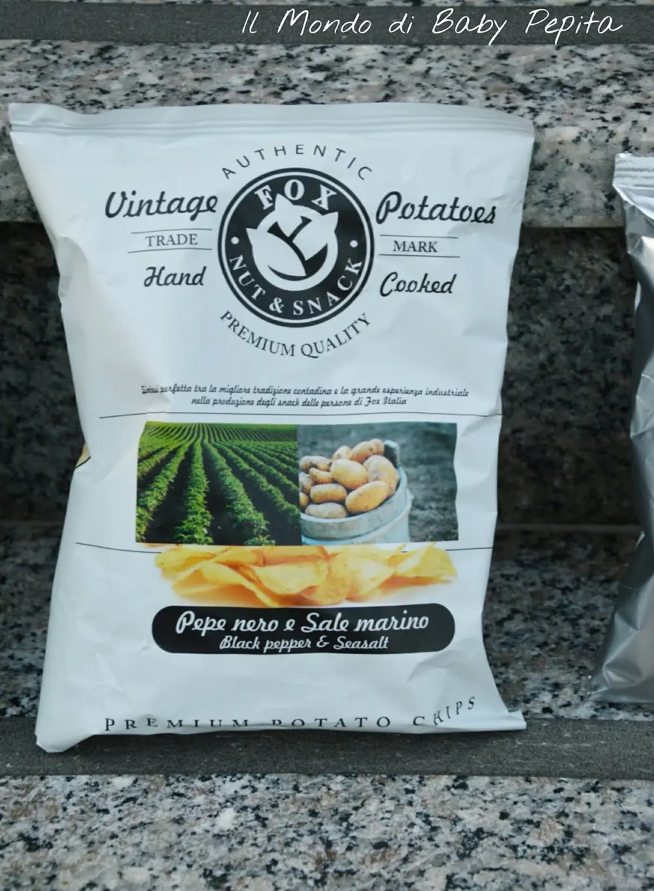
TORTILLA CHIPS - SWEET CHILI
Conoscete le tortilla no, o nachos? sono snack salati a triangolino messicane, ed anche questa variazione è al rosmarino.PARERE:Un tantino dure, sembrano un pò di plastica, ma sapore buono.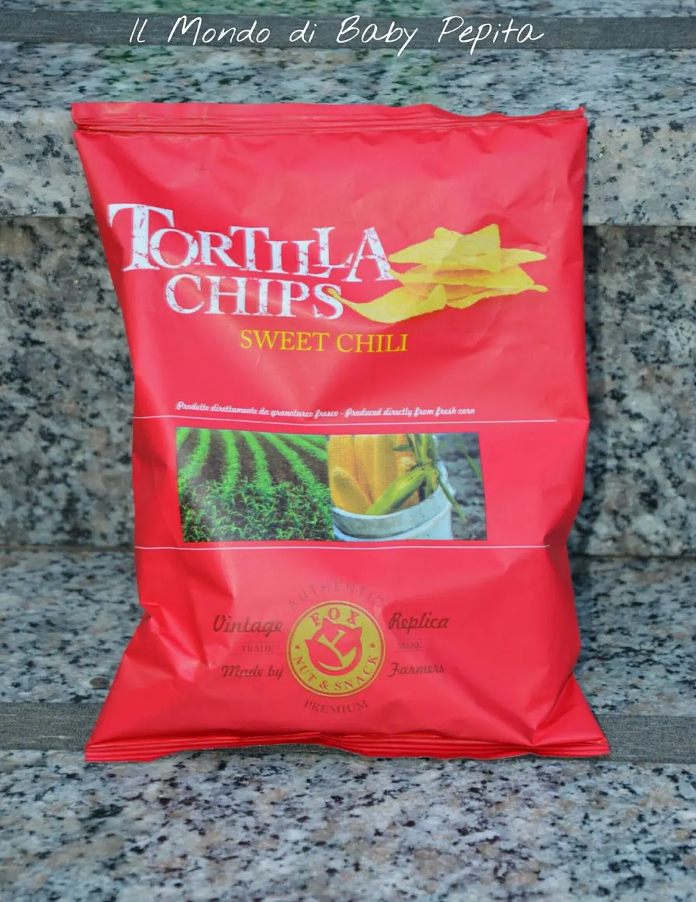
TORTILLA CHIPS - FORMAGGIO
Le stesse tortilla di prima ma questa volta al formaggio. PARERE:Buone ma anche loro come le altre un pò durette.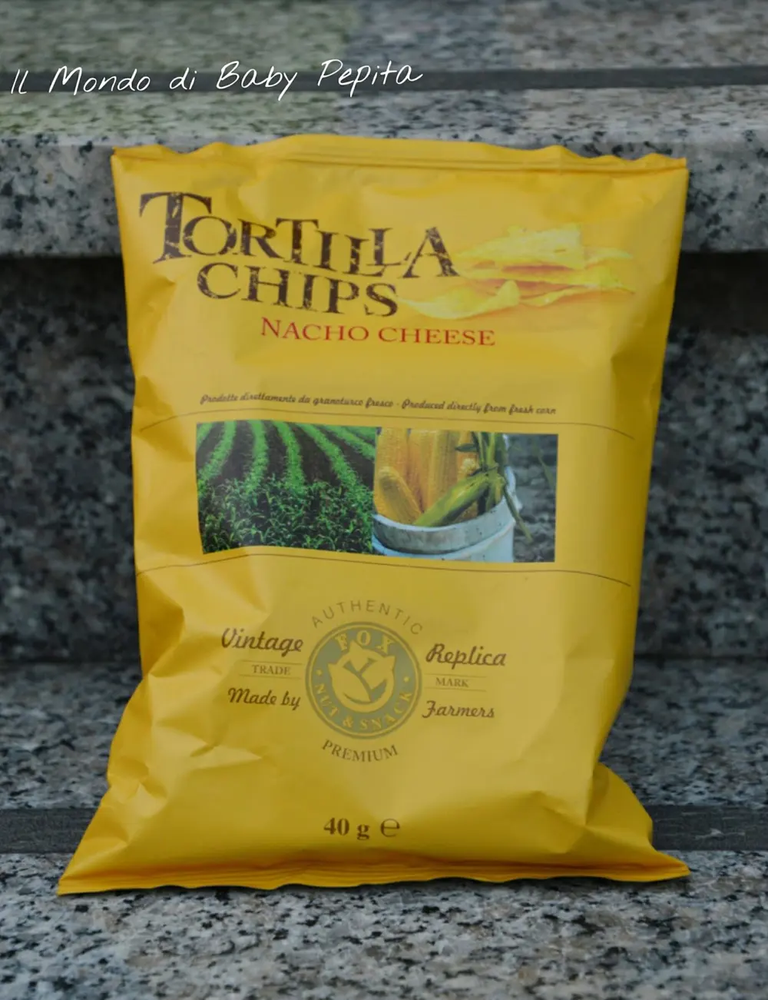
PATATE ALL'ACETO BALSAMICO & SALEPARERE:Buonissime 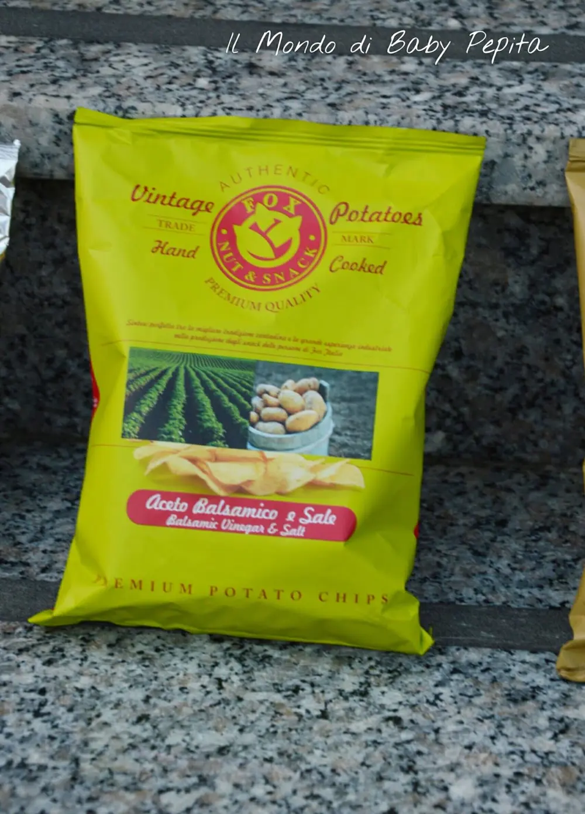
POTATOES ROSMARINO GOURMET
Patatine al gusto di rosmarino PARERE:Queste mi sono piaciute particolarmente.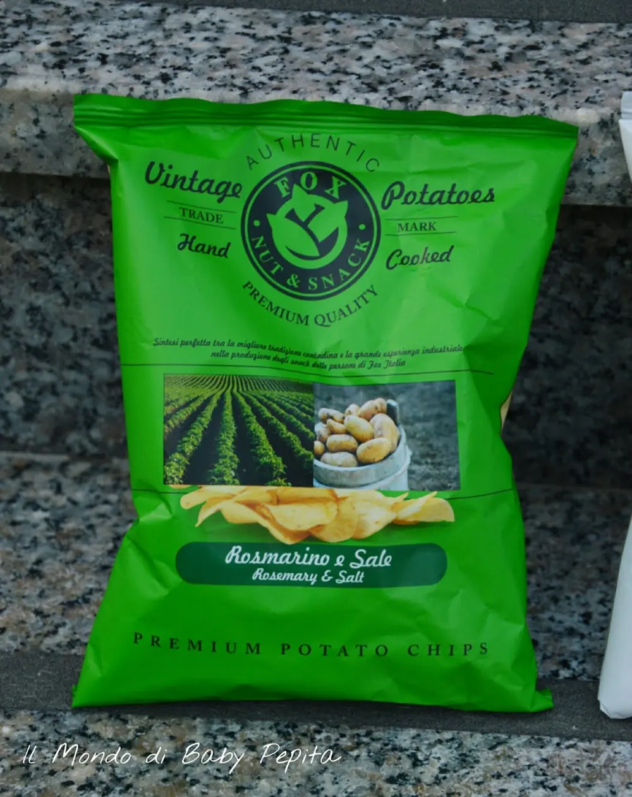
VEGANO CHIPS
E' un misto di vegetali essiccati,all'interno infatti troverete un Mix di carote, pastinaca e barbabietola rossa.PARERE:Buone per chi ha voglia di sperimentare altri gusti.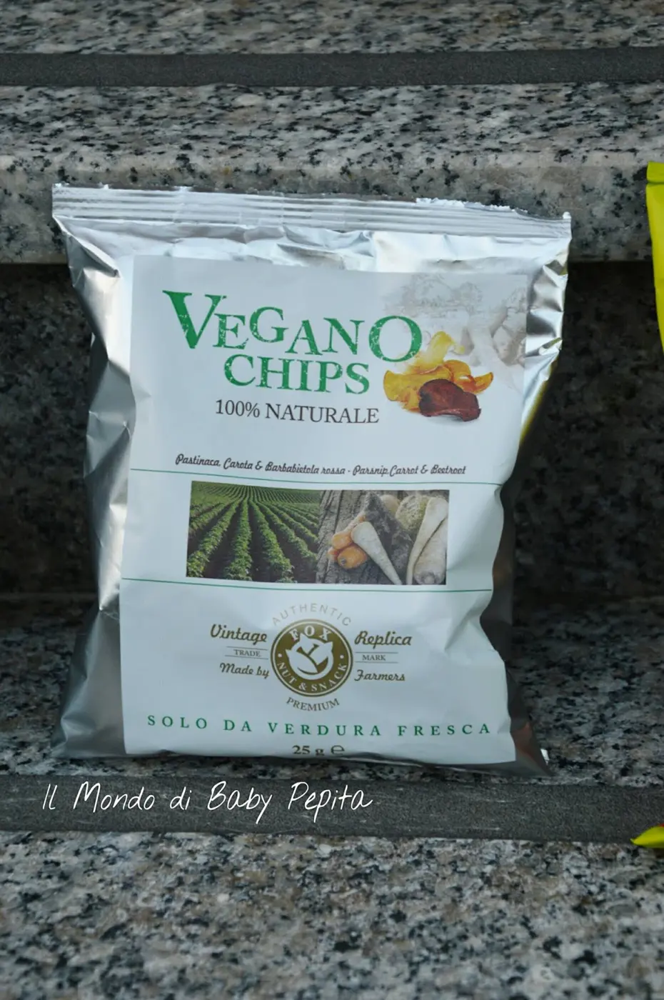
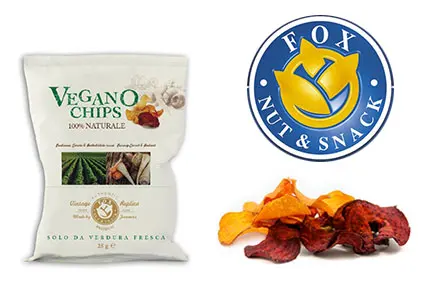
VINTAGE PEPE NERO E SALE MARINOAl gusto del pepe nero e sale marino.PARERE: Squisite al punto giusto per un aperitivo prima di cena.
 VINTAGE POTATOES SALE MARINOBuonissime patatine al gusto del sale.PARERE:Adoro questi leggeri sapori anche se vogliamo, legati alle tradizioni, ma sono davvero ottime.
VINTAGE POTATOES SALE MARINOBuonissime patatine al gusto del sale.PARERE:Adoro questi leggeri sapori anche se vogliamo, legati alle tradizioni, ma sono davvero ottime.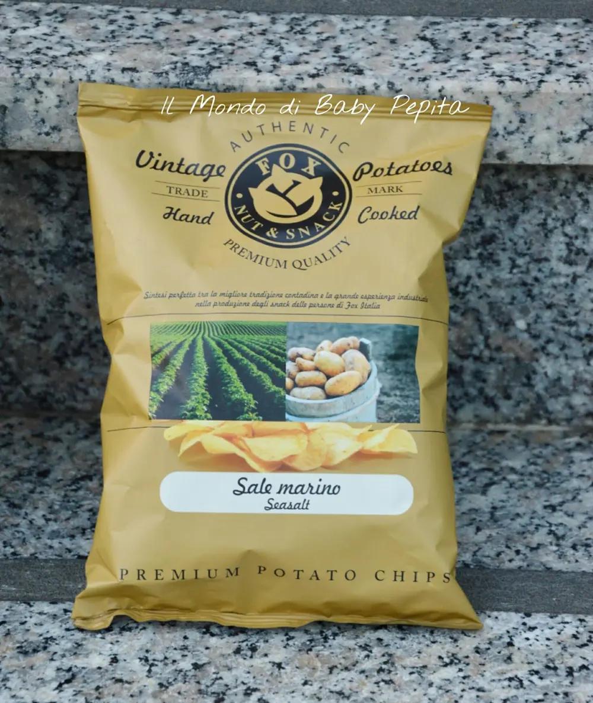
Che dire?Ha ancora una marea da gusti da provare questa azienda che io proverei tutte con gran curiosità. .
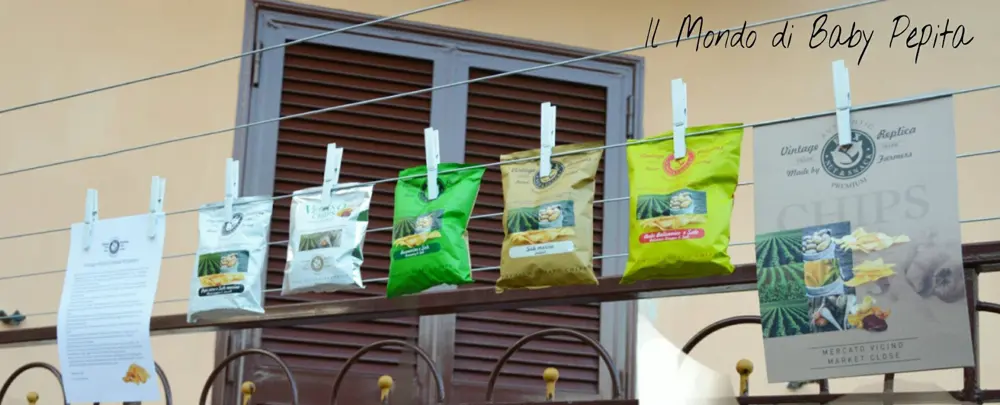
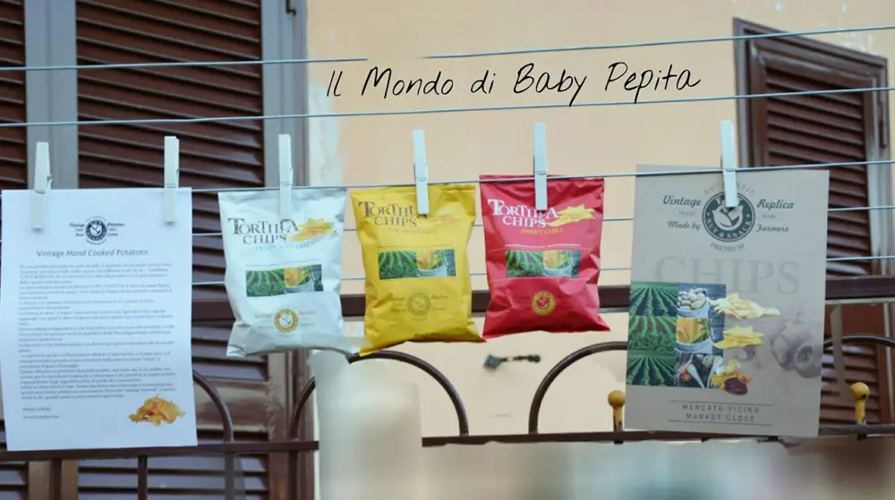
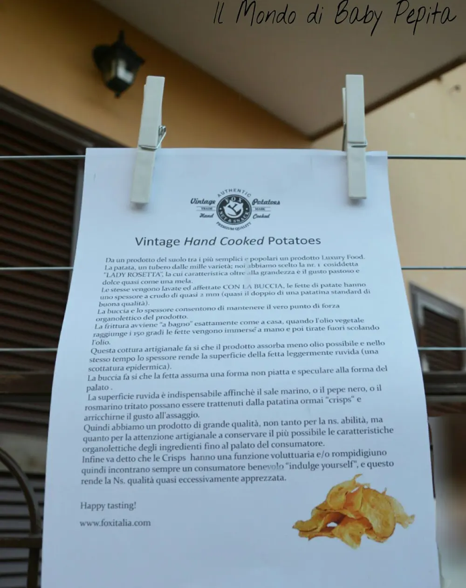
Diamo inizio ad un happy hour? :D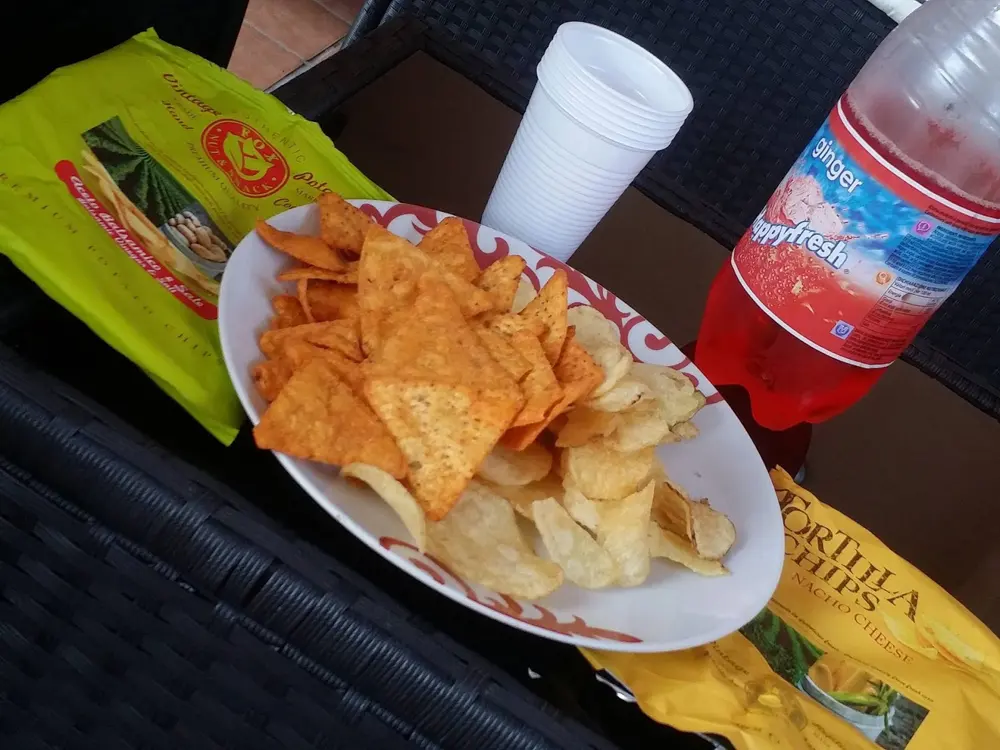
Se siete interessati all'azienda QUI troverete il loro sito webSeguiteli anche su facebook
Per quanto riguarda me seguitemi su:FACEBOOKINSTAGRAMTWITTER